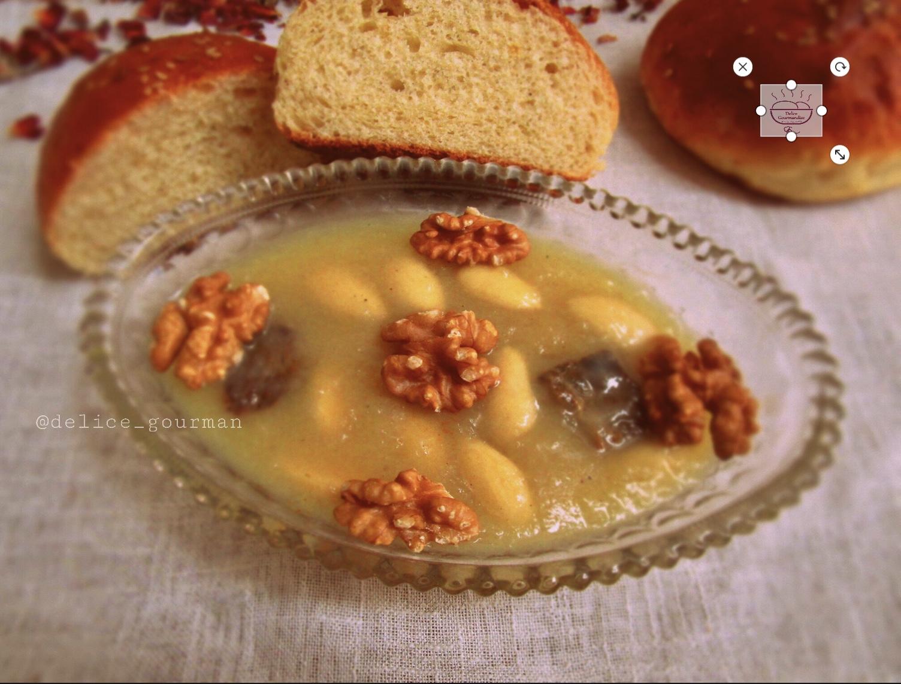

Rūh El Bey (Tbikh)

Description
Rūh El Bey, or Tbikh, is a refined jelly dessert originated from the lavish palaces of Constantine, where Beys ruled (Ottoman period), and found its way to the general population afterwards, it is generally strictly prepared for very
special events. It remains quite a controversial dish due to its pelicular preparation method and unique sweet/salty combo of (expensive) ingredients, it's still a core part of Constantinois cuisine that we still love and enjoy
to this day.
Adapted from Cuisine De Zika's recipe
Ingredients
For the broth:
- 300g of shoulder veal
- 1 full tablespoon of butter
- 1 chopped onion, the sauce will be filtered
- 1 cinnamon stick
- a few pistils of saffron
- 1 to 2 cloves (optional)
- 2 tbsp of sugar
For the jelly:
- 7 measures of strained (future) broth
- 3/4 measure of cornstarch
- 1 measure of pure bee honey, more or less
- 1 measure of sugar
- 1/2 measure of rose water
- 1/2 measure ground almonds (optional)
- 1 full handful of whole blanched almonds
Steps
- Brown the meat (cut into pieces or large cubes) in the butter with the onion.
- Sauté until the onion melts.
- Add enough water to cook the meat.
- add the spices, saffron and a pinch of salt, just enough so that the jelly is not bland.
- Cover and simmer until the meat is cooked, then remove meat.
- strain the sauce, leave to cool, so that the cornstarch does not form lumps, and if this is the case, pass the mixture through a sieve.
- Take: 7 measures of this cold broth with 2 cloves, traditionally not necessary.
- Add the cornstarch, honey, sugar, rose water and bring to a low heat to cook the starch without ceasing to mix.
- As soon as it starts to thicken, remove the cloves if you put any.
- Add whole and powdered almonds (optional).
- Taste the preparation, if it is bland, add a little salt (by pinch).
- Let it set a little without drying out the jelly which must remain fluid.
- Pour into a large serving dish as done traditionally, or pour into individual plates or cups.
- Add the whole almonds while the jelly is still fluid, it will continue to set as it cools.
- Garnish with shredded meat and almonds as tradition dictates.
- Serve cold and enjoy!